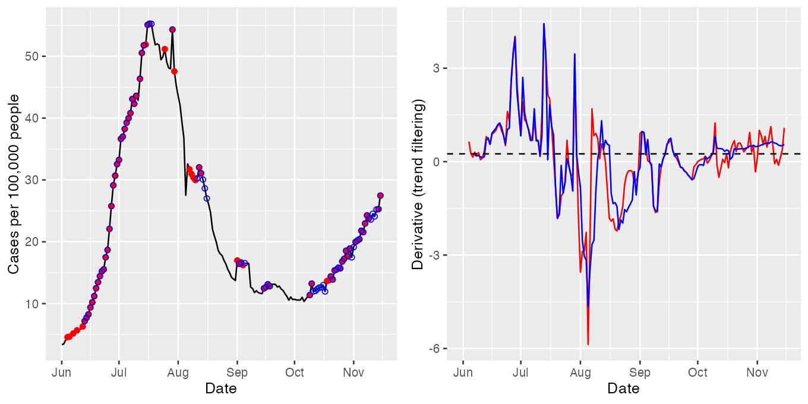

2. Estimate the derivatives of a covidcast signal
Source: vignettes/estimate-deriv.Rmd
estimate-deriv.RmdIn this vignette, we estimate derivatives of covidcast signals using the estimate_deriv() function from the modeltools package.
Downloading data from the Delphi API
As in the Getting started guide and Percentage change vignette, we demonstrate this derivative estimation functionality on smoothed versions of the state-level COVID-19 case rates reported by the USAFacts data source from June 1, 2020 to November 15, 2020. The code chunk below fetches these data from the Delphi API.
library(covidcast)
library(modeltools)
library(dplyr)
library(knitr)
start_day <- "2020-06-01"
end_day <- "2020-11-15"
geo_values <- c("ca", "fl", "ny", "tx")
case_rates <- covidcast_signal(data_source = "usa-facts",
signal = "confirmed_7dav_incidence_prop",
start_day = start_day,
end_day = end_day,
geo_type = "state",
geo_values = geo_values)Estimating derivatives
The modeltools function for estimating derivatives is called estimate_deriv(), and (in addition to a covidcast_signal data frame) takes two primary arguments:
method: a string indicating the method to use for derivative estimation,n: a positive integer specifying the trailing number of days to use to train the given method.
Estimating derivatives via linear regression
First we illustrate the default method for derivative estimation method = "lin", which uses the slope from a simple linear regression. Here we also use the default trailing number of days n = 14.
case_rates <- estimate_deriv(case_rates, method = "lin", n = 14)
case_rates %>%
arrange(geo_value) %>%
select(geo_value, time_value, value, deriv) %>%
head(10) %>%
kable(format = "html", digits = 3)| geo_value | time_value | value | deriv |
|---|---|---|---|
| ca | 2020-06-01 | 6.701 | NA |
| ca | 2020-06-02 | 6.389 | -0.312 |
| ca | 2020-06-03 | 6.497 | -0.102 |
| ca | 2020-06-04 | 6.863 | 0.059 |
| ca | 2020-06-05 | 7.109 | 0.129 |
| ca | 2020-06-06 | 6.808 | 0.087 |
| ca | 2020-06-07 | 6.741 | 0.056 |
| ca | 2020-06-08 | 6.753 | 0.039 |
| ca | 2020-06-09 | 6.993 | 0.045 |
| ca | 2020-06-10 | 7.191 | 0.056 |
Note above that a column deriv has been added to the output data frame, which contains the derivative estimates. Below we visualize these estimates in tandem with the signal itself. The red dots mark time points at which the derivative estimate exceeds an (arbitrarily chosen) threshold of 0.25. These seem to roughly but reasonably mark times of upswing in the underlying signal.
library(ggplot2)
library(gridExtra)
state <- "fl"
threshold <- 0.25
p1 <- ggplot(case_rates %>% filter(geo_value == state), aes(x = time_value, y = value)) +
geom_line() +
geom_point(data = case_rates %>%
filter(geo_value == state, deriv >= threshold),
aes(x = time_value, y = value), color = "red") +
labs(x = "Date", y = "Cases per 100,000 people")
p2 <- ggplot(case_rates %>% filter(geo_value == state), aes(x = time_value, y = deriv)) +
geom_line() +
geom_hline(yintercept = threshold, linetype = 2) +
labs(x = "Date", y = "Derivative (linear regression)")
grid.arrange(p1, p2, nrow = 1)
Estimating derivatives via smoothing spline
Now we consider method = "ss", which uses a smoothing spline to estimate the derivative of a covidcast signal. In particular, at each time point, we fit a natural cubic spline to the data from the trailing n days, and return the derivative of the underlying fitted spline at the current time as the estimate. Here we set n = 28, a bit higher sample size, and fit the spline in two ways: first, by fixing the degrees of freedom to be 8; and second, using cross-validation to choose the amount of regularization (tuning parameter). This is accomplished by passing additional arguments to estimate_deriv(), which are in turn passed on to the underlying function it uses to fit smoothing splines (stats::smooth.spline()). Note that we also set a custom name for the output column with the estimated derivatives, via the col_name argument of estimate_deriv().
case_rates <- estimate_deriv(case_rates, method = "ss", n = 28,
col_name = "deriv_ss1", df = 8)
case_rates <- estimate_deriv(case_rates, method = "ss", n = 28,
col_name = "deriv_ss2", cv = TRUE)
p1 <- ggplot(case_rates %>% filter(geo_value == state),
aes(x = time_value, y = value)) +
geom_line() +
geom_point(data = case_rates %>%
filter(geo_value == state, deriv_ss1 >= threshold),
aes(x = time_value, y = value), color = "red") +
geom_point(data = case_rates %>%
filter(geo_value == state, deriv_ss2 >= threshold),
aes(x = time_value, y = value), color = "blue", shape = 21) +
labs(x = "Date", y = "Cases per 100,000 people")
p2 <- ggplot(case_rates %>% filter(geo_value == state),
aes(x = time_value)) +
geom_line(aes(y = deriv_ss1), color = "red") +
geom_line(aes(y = deriv_ss2), color = "blue") +
geom_hline(yintercept = threshold, linetype = 2) +
labs(x = "Date", y = "Derivative (smoothing spline)")
grid.arrange(p1, p2, nrow = 1)
The estimated derivatives — in red for the smoothing spline with its degrees of freedom fixed at 8, and in blue for that tuned by cross-validation — appear less smooth than those above, from linear regression. Using cross-validation offers more adaptivity to the time-varying level of smoothness, as is apparent from comparing the red and blue derivative estimates in October and November.
Estimating derivatives via trend filtering
Lastly we consider method = "tf", which uses trend filtering (Tibshirani 2014) for estimating the derivative. That is, at each time point, we fit a discrete spline of quadratic order to the data from the trailing n days, and return the discrete derivative of the underlying fitted spline at the current time as the estimate. As before, we fit the spline in two ways: first, using a fixed degrees of freedom of 8; and second, using cross-validation to choose the amount of regularization. Since the optimization here takes a while (it’s based on computing a full solution path for the trend filtering problem, via the genlasso::trendfilter() function), we only compute derivatives for Florida.
case_rates_state <- case_rates %>% filter(geo_value == state)
case_rates_state <- estimate_deriv(case_rates_state, method = "tf", n = 28,
col_name = "deriv_tf1", df = 8)
case_rates_state <- estimate_deriv(case_rates_state, method = "tf", n = 28,
col_name = "deriv_tf2", cv = TRUE)
p1 <- ggplot(case_rates_state, aes(x = time_value, y = value)) +
geom_line() +
geom_point(data = case_rates_state %>% filter(deriv_tf1 >= threshold),
aes(x = time_value, y = value), color = "red") +
geom_point(data = case_rates_state %>% filter(deriv_tf2 >= threshold),
aes(x = time_value, y = value), color = "blue", shape = 21) +
labs(x = "Date", y = "Cases per 100,000 people")
p2 <- ggplot(case_rates_state, aes(x = time_value)) +
geom_line(aes(y = deriv_tf1), color = "red") +
geom_line(aes(y = deriv_tf2), color = "blue") +
geom_hline(yintercept = threshold, linetype = 2) +
labs(x = "Date", y = "Derivative (trend filtering)")
grid.arrange(p1, p2, nrow = 1)## Warning: Removed 3 row(s) containing missing values (geom_path).## Warning: Removed 6 row(s) containing missing values (geom_path).
The estimated derivatives now appear a bit smoother than the last ones, from the smoothing spline methods. Again, using cross-validation offers a noticeable improvement in adapting to to the time-varying level of smoothness, as is very clear from the differences between red and blue derivative estimates in October and November.